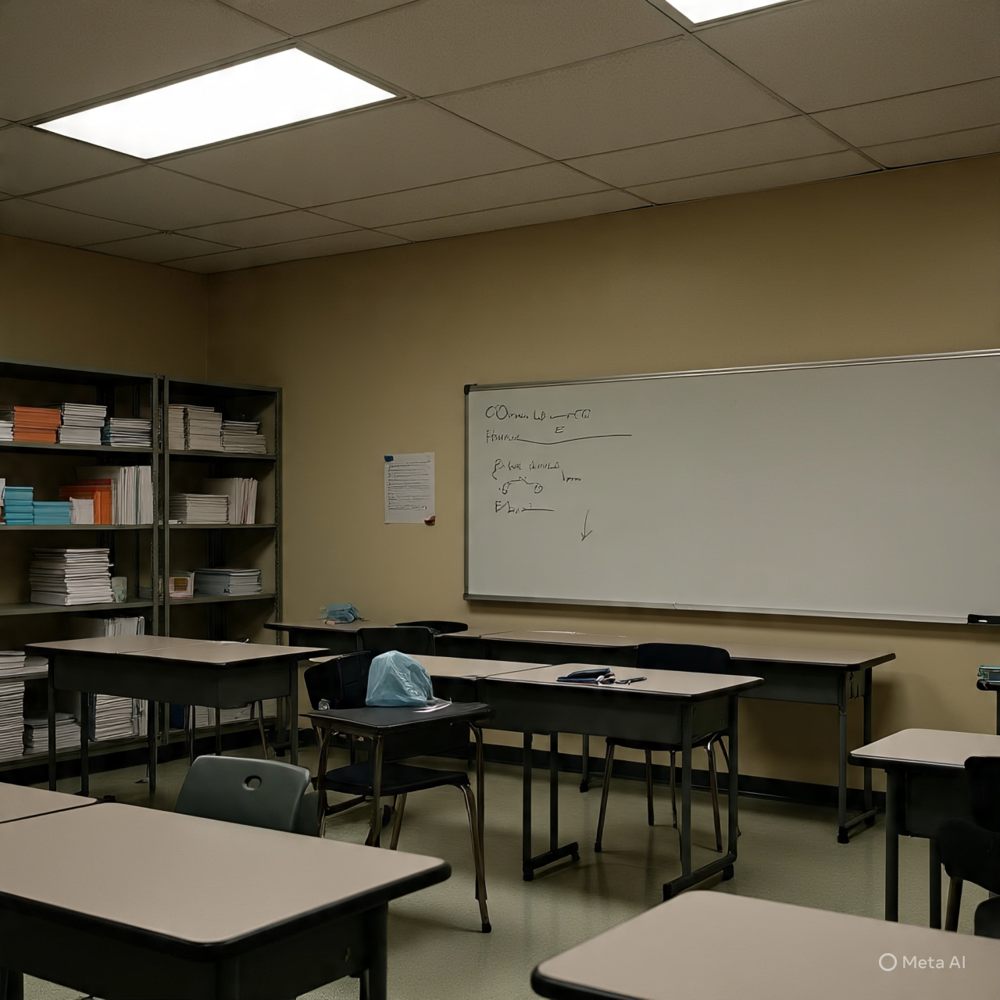

Educação
Concurso Público para Professores
A Ministra da Educação, Maria Luísa Grilo, anunciou que pode haver um concurso público para admissão de novos professores ainda este ano. Isso se deve à construção de 56 novas escolas em todo o país, no âmbito do Projeto de Empoderamento das Raparigas e Aprendizagem para Todos (PAT). A ministra destacou que é necessário cumprir alguns requisitos, incluindo a aprovação do orçamento pelo Ministério das Finanças.